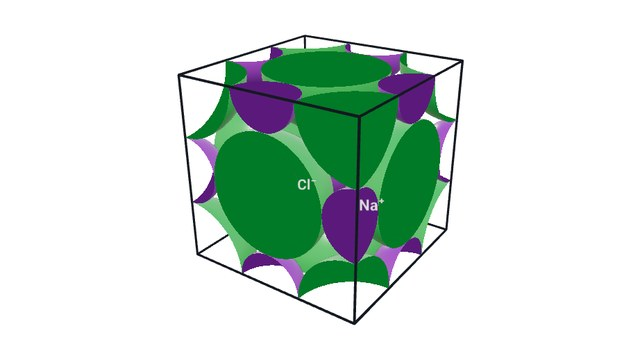
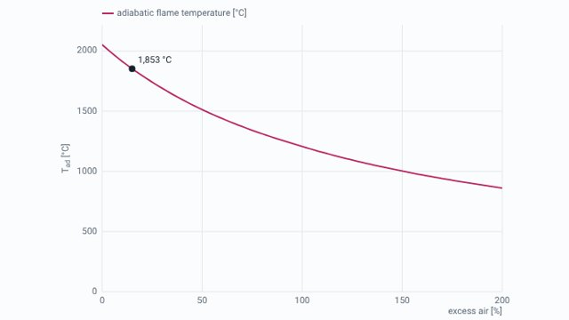

Interactive chemistry for mechanical engineering students. Turn molecules, crystals and laboratory apparatus in 3D, change the numbers in worked examples, and run the simulations in class. Everything works in a browser, with nothing to install.

The whole course as slide decks with molecules, crystals and lab apparatus in 3D, live simulations, worked examples and self-checks: materials, atoms, bonding, equilibrium and pH, electrochemistry, solids, carbon compounds, polymers, fuels and applications.
Open notes
Combustion, corrosion and carburising, then calibration, the pH meter, bomb calorimetry and flue gas analysis, with live calculators and worked examples.
Open lecture